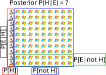
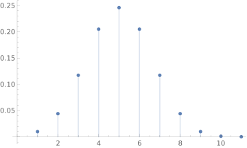

Probability Basics for Robotics
Why Probability?
- Until now, we have discussed deterministic models
- These models are wrong (just wait until you see how poorly our forward kinematics predicts the robot movement)
- We could improve the models, such as by adding mass/inertia/dynamics
- Ultimately, we will reach the limit of our ability to model everything precisely
- Maybe a perfect model is possible if only we knew more, but probably not. (Does randomness really exist?)
- We are definitely uncertain about some quantities (listed in roughly decreasing order of importance)
- Friction
- Manufacturing tolerances
- Air Resistance
- Radio waves
- The earth is spinning and rotating around the sun
- Gravity is different in different places
- Sometimes we can engineer products to reduce uncertainty (such as not relying on the gain of a transistor in a circuit)
- Sometimes we engineer products with sensors that enable to work despite not having perfect models (this is feedback control)
- Probability theory enables us and the robots we program to reason about uncertain and random situations.
- Applications in Sensor Fusion, Localization, Mapping, and Machine Learning
- These models are wrong (just wait until you see how poorly our forward kinematics predicts the robot movement)
Random Experiments
- A procedure that has an unpredictable outcome despite being repeated under the same conditions.
- Obtaining conditions for an exactly repeatable experiment is quite difficult or impossible.
- How do we know the conditions are the same?
- Conditions are the same up until the best of our ability to measure
- Sample Space: Set containing all of the potential outcomes of a random experiment
- The sample space is where the underlying randomness happens
- Randomness is modeled as "run the experiment, which sample space element did we get?"
- Items in the sample space can be anything
Examples
- Rolling a single die
- Possible outcomes, a number 1 - 6: these are the outcomes and they form the sample space
- The sample space could also consist of (literally) the face of the die that is showing.
- For this example the sample space is finite
- Breaking a stick in half at a random location
- Could define the sample space as a set of pairs of stick halves
- Sample space could be set of all possible distances from the left end where the break occurred
- For this example, the sample space is uncountably infinite (i.e., a real number)
- (Aside: Is it really though? The stick is made up of a finite number of atoms.)
- At the end of the day, no matter how complicated the system is, there is always
- A random experiment
- A sample space
Defining Random Experiments
- Specify a random experiment by defining
- A procedure of what happens:
- Roll a die one time
- Command diff-drive robot to drive forward with speed of 0.5 m/s for 2 seconds
- At least one observation
- Note the position of the robot relative to the world coordinate frame)
- Observe if the number showing at the top of the die is a 1
- Observe if the number showing at the top of the die is even or odd
- Observe the distance the robot has traveled from its initial to final position
- Observe the (theta, x, y) pose of the robot in a world coordinate frame
- A procedure of what happens:
- Define the sample space as the set of possible outcomes (i.e., possible things you have observed)
- Thus all outcomes in the sample space are mutually exclusive (no two outcomes occur at the same time)
- For a die, it is \({1,2,3,4,5,6}\)
- For the robot driving forward when we measure distance it is the set of positive real numbers (since distance is positive)
- You can also define the sample space as all real numbers, with some outcomes being impossible
- For the robot driving forward and measuring the pose it is multimensional cartesian product of intervals: (-Pi, Pi) x R x R.
- Sample space depends not just on the experiment but also on the observation:
- Toss a coin twice, and note the sequence: S = {HH, HT, TH, TT}
- Toss a coin twice, and count the number of heads: S ={0, 1, 2}
Statistical Regularity
- Why do we care about probability at all?
- After many repetitions, average outcome of a random experiment should be the same
- Relative frequency: the number of times an outcome occurs divided by number of experiments that were run
- Statistical regularity is important for connecting theoretical notions of probability to real-world outcomes
Example: roll a die \(n\) times
- Relative frequency: number of times a 1 appears divided by \(n\) times
- As \(n\) goes to infinity, relative frequency of the die goes to \(1/6\), just as 1 out of 6 elements in the sample space is a 1
- This is the probability of rolling a 1.
- If you can use a computer to repeat an experiment many times, you can sometimes brute-force an estimate for probability.
- In the real world, it is (technically) impossible to repeat the same exact experiment more than once, but we rely on controlling as many of the initial conditions as possible.
Some Properties of statistical regularity
- Each outcome has relative frequency between 0 and 1
- You can't get an outcome more than the number of times you run the experiment
- The sum of the number of number of occurrences across possible outcomes is \(n\) (and thus the sum of relative frequencies is 1)
- Every experiment yields an outcome
- The frequency of an event is the sum of the individual frequencies of individual outcomes
- relative frequency of odd dice rolls = relative frequency of rolling a 1 + rolling a 3 + rolling a 5
Discrete and Continuous Sample Spaces
- Discrete: Sample space is a finite or countably infinite
- Countably infinite sample space example: Flip a coin until it is heads. Observe the numbers of tails
- {0, 1, 2, 3, …}
- Continuous: Sample space is uncountable
- Spin a wheel, observe the angle
- Throw a dart on a board, note its x and y coordinates
Events:
- Informally: anything that can happen as a result of an experiment that we might want to know the probability of.
- An event is a subset of the sample space.
- The event occurs if any outcome in the event set occurs
- The certain event: the full sample space, it occurs if any of the outcomes
- The impossible event - never occurs, the empty set.
- Event Class:
- Contains the events of interest, which are assigned probabilities
- Compliments, countable unions and countable intersections of events are also in the event class
- For discrete sample spaces: this is (usually) the set of all subsets of \(S\) (this does not hold for continuous sample spaces)
- For continuous sample spaces: complements, countable unions and countable intersections of intervals of the real line \((a, b] \mathrm{ or } (-\infty, b]\)
- Not set of all subsets (for technical reasons).
Probability Axioms
- The Assumptions:
- We have defined a random experiment, whose possible outcomes are in the set \(S\)
- An event class \(F\) consisting of subsets of \(S\) have been defined.
- Each event \(A\) in \(F\) has been assigned a number \(P[A]\)
- The axioms:
- \(0 \leq P[A]\)
- \(P[S] = 1\) (that is, probability of something in the sample space occuring is 1).
- Probability of an infinite union of mutually exclusive events is the sum of the individual probabilities:
- If \(A \cap B = \emptyset\), then \(P[ A \cup B] = P[A] + P[B]\) (good enough for finite sample spaces)
- If \(A_1, A_2, \dots\) is a sequence such that \(A_i \cap A_j = \emptyset\) for all \(i \neq j\) then \(P[\bigcup_{k=1}^{\infty}A_k] = \sum_{k=1}^{\infty}P[A_k]\) (more general)
Venn Diagrams
- We can use Venn diagrams to visualize probability
Important Corollaries:
- \(P[A^c] = 1 - P[A]\) (because \(S = A \cup A^c\), \(P[S] = 1\), and \(P[A \cup A^c] = P[A] + P[A^c]\)
- \(P[A] <= 1\): (from 1, and the fact that P[Ac] >= 0.
- \(P[\emptyset] = 0\) (Let \(A = S\) then \(A^c = \emptyset\), result follows from 1.)
- \(P[A \cup B] = P[A] + P[B] - P[A \cap B]\)
Conditional Probability
How does knowledge about event \(B\) occurring change the probability of event \(A\)?
- \(P[A | B] = \frac{P[A \cap B]}{P[B]}, P[B] > 0\).
- If B has occurred then A can only occur if A and B has occurred
- Thus the sample space has been reduced to B.
- For fixed B, P[A | B] is itself a probability over this reduced sample space
Example:
Random Experiment: Flip two coins, count the number of Heads
Sample space \(\{0, 1, 2\}\)
Event Space is \(\{\emptyset, \{0\}, \{1\}, \{2\}, \{0, 1\}, \{0, 2\}, \{1, 2\}, \{0, 1, 2\}\}\)
Probability: P[0] = 1/4, P[1] = 1/2, P[2]= 1/4
Question What is the probability of there having been 1 head given that either 1 or two heads were obtained:
\[\begin{align} P[\{1\} | \{1, 2\}] &= \frac{P[\{1\} \cap \{1, 2\}]}{P[\{1, 2\}]}\\ &= \frac{P[\{1\}]}{P[\{1\}\cup\{2\}]}\\ &= \frac{P[{1}]}{P[{1}] + P[{2}]}\\ &= \frac{1}{2}/\frac{3}{4}\\ &= 2/3 \end{align} \]Note: the probability is higher then the probability of \(\{1\}\) on its own, which makes sense because we've eliminated the possibility of 0 heads.
We can also write \(P[A \cap B] = P[A | B]P[B] = P[B | A] P[A]\)
Theorem on total probability
- A practical way of computing probabilities when only conditionals are known.
- \(B_1, \dots B_n\) are mutally exclusive events whose union is the entire sample space \(P[A] = P[A | B_1]P[B_1] + P[A | B_2]P[B_2] + \dots + P[A | B_n]P[B_n]\)
Bayes Rule
- The problem: what is the probability that a hypthesis \(H\) is correct given evidence \(E\)
- So, there is a random experiment, we observe event \(E\), how likely is event \(H\)?
- We just did this: \(P[H | E] = \frac{P[H \cap E]}{P[E]}\). However,
- What if we don't know P[H ∩ E]? Or \(P[E]\)
- This is a common situation, for example (all numbers made up): What is the probability that there is a fire in Tech, given that the fire alarm on?
- This question is asking P[Fire in tech | alarm] (so H = fire in tech, E = alarm).
- But, I don't know what the probability is of there being a fire in tech and the alarm going off. -Why not? What about all the times the alarm goes off and there is no fire.
- I do know however, that fire alarms are very accurate. Given that there is a fire, the probability of a fire alarm going off is 0.90. Thus \(P[E | H] = 0.90\)
- I also know that the fire alarm does not go on that often there is no fire. Thus \(P[E | H^c] = 0.2\)
- I also know that fires are rare \(P[H] = 0.001\)
- From our conditional probability formulas: \(P[H | E]P[E] = P[E | H] P[H]\),
- This is bayes rule:
- Often we use law of total probability to compute \(P[E]\)
- \(P[E] = P[E | H]P[H] + P[E | H^c]P[H^c]\)
- Therefore, using the numbers I just stated: probability of fire, given fire alarm is \(0.9*0.001/(0.9*0.001 + 0.2*0.999) = 0.004\)
Terminology:
- Hypothesis: \(H\) (There is a fire in Tech)
- Evidence: \(E\) (The fire alarm is going off)
- \(P[H]\) is the prior This is the probability of the hypothesis is true in the absence of any evidence. (Probability of a fire in Tech)
- We are assumed to have some prior understanding of the world
- \(P[E | H]\) is the likelihood. How likely would the evidence be were our hypothesis correct. (Probability of fire alarm going off given that there is a fire).
- \(P[H | E]\) is the posterior - How likely is our hypothesis, now that we've seen the evidence (this is what we are computing
- \(P[E]\) - A "normalization factor". By seeing the evidence we are restricting the size of the sample space to only those samples consistent with the Evidence event having occurred.
Graphical Approach:
Linus is a computer programmer. He likes writing bash scripts and is a master at git. What is the probability that Linus uses Linux?
- H - Linus uses Linux
- Not H - Linux uses Windows (or something else)
- E - Linus is a computer programmer who likes writing bash scripts and is a master at git.

- Bayes rules tells us that, even though that there is a high probability that Linux users fit the evidence (they program, like writing bash scripts and are masters at using git), that is P(E | H) is large, and Windows/other users likely don't fit the evidence (that is P(E | not H) is small), the prior probability that a user is a Linux user P(H) is so low that there is actually a greater chance of Linus using Windows/Other rather than Linux.
Independence
Knowledge that event B occurs does not affect the chance of A occuring: \(P[A \cap B] = P[A] P[B]\), which implies that \(P[A|B] = P[A]\) and \(P[B|A] = P[B]\) (because of the law on conditional probability)
Example:
- Random Experiment: We flip a quarter and a nickel and observe whether they are heads or tails.
- The sample space is \(S = \{(Q_H, N_H), (Q_H, N_T), (Q_T, N_H), (Q_T, N_T)\}\)
- Event \(A = \{(Q_H, N_H), (Q_H, N_T)\) "The quarter is heads"
- Event \(B = \{(Q_H, N_T), (Q_T, N_T)\) "The nickle is tails"
- Event \(C = \{(Q_H, N_H)\}\) "All heads"
- \(P[A] = 1/2\), \(P[B] = 1/2\), \(P[C]=1/4\)
- \(P[A \cap B] = P[\{Q_H, N_T\}] = 1/4 = P[A] P[B]\), therefore \(A\) and \(B\) are independent.
- Also, note that \(P[A | B] = P[A] = 1/2\) (if event B has occurred, then 1 out of the two outcomes in event \(B\) would lead to event \(A\) also occuring.
- \(P[A \cap C] = P[\{(Q_H, N_H)\}] = 1/2 \neq P[A]P[C]\) so \(A\) and \(C\) are not independent
- Mutually exclusive events with non-zero probability can never be independent.
- Mutually exclusive means that "if A occurs than B cannot occur and vice versa"
- Thus, knowing about the occurence or non-occurance of A gives you information about B
- P[A and B] = 0 for mutally exclusive events, which means P[A] or P[B] = 0.
- For multiple events, independence requires: For k = 2 .. n: P[Ai1 ∩ … Aik] = P[Ai1]…P[Aik]
Random Variable
- Informally: A function that assigns a real number to each outcome in the sample space.
- Not a Variable
- Actually a function from the sample space to real numbers
- Not Random
- Actually a deterministic mapping. The randomness is from which outcome in the sample space occurs after performing the experiment
- Why Random Variables?
- Allow us to look at different aspects of the same random experiment
- Provide an easier way to assign probabilities to elements of our sample space
Example:
Flip two coins. \(\xi \in S\). \(X(\xi)\) is a random variable counting the number of heads. \(Y(X(\xi))\) is a random variable that is twice the number of heads
\(\xi\) HH HT TH TT X(ξ) 2 1 1 0 Y(ξ) 4 2 2 0 Function of a random variable is a random variable
If the sample space is already numerical, the random variable is just \(X(\xi) = \xi\)
So \(X : S \to S_x\), \(S_x \subset \mathbb{R}\), thus \(S\) is the domain and \(S_X\) is the range of the random variable.
Discrete Random Variables
- The random variable maps items in the sample space to a finite set of values
- Probability for events \(A_k = \{\xi: X(\xi) = x_k\}\)
- Probability mass function (pmf) \(p_x(x) = P[X = x] = P[\{\xi : X(\xi) = x\}]\), where \(x\) is a real number.
- The event \(A_k = \{\xi : X(\xi) = x_k\}\) is the equivalent event to \(X(\xi) = x_k\)
Properties of pmf (note that the events \(A_k\) partition \(S\), which each partition mapping to a value of the random variable.
- \(p_x(x) >= 0\)
- \(\sum_{x \in S_x} p_X(x) = \sum_{k}p_X(x_k) = \sum_{k}P[A_k] = 1\) (This is because the \(A_k\) partition \(S\))
- \(P[X \in B] = \sum_{x\in B}p_X(x),\text{ where }B \subset S_x\) - This is because the events in \(B\) are a union of elementary events.
pmf provides probabilities for all events from the range of the random variable.
Conditional pmf \(p_x(x|C) = P[X = x | C] = \frac{P[{X=x}\cap C]}{P[C]}\)
Example

Continuous Random Variables
\(X(\xi)\) is a function from \(S\) to \(\mathbb{R}\) such that \(A_b = \{\xi : X(\xi) \leq b\}\) is in the event class for every \(b\) in \(\mathbb{R}\).
- Basically, there is an event consisting of all the sample space outcomes that \(X\) maps to a value \(\leq\) b, for any b
Cumulative Distribution Function (cdf) for random variable X is the probability of the event that \(x \leq X\).
\[\begin{equation} F_X(x) = P[X \leq x], -\infty < x < \infty. \end{equation} \]\(P[a < X \leq b] = F_X(b) - F_X(a)\)
For continuous random variables \(P[X = x] = 0\).
- All types of random variables (continuous, discrete, and mixed) can be described in terms of a cdf.
- We'll use the pmf for discrete random variables and not worry about its cdf (its a staircase function)
- For continuous random variables, we are more used to dealing with a probability density function:
- \(F_x(x) = \int_{-\infty}^x f(t)dt\)
Probability Density function
When it exists \(f_x(x) = \frac{dF_X(x)}{dx}\)
\(f_x(x) >= 0\)
\(P[a \leq X \leq b] = \int_{a}^{b}f_X(x)dx\)
pdf completely specifies behavior of continuous random variables
Conditional cdf
\(F_x(x | C) = \frac{P[{X \leq x} \cap C]}{P[C]}, \text{ if } P[C]>0\)
Conditional pdf is derivative of conditional cdf with respect to x:
\[\begin{equation} f_X(x|C) = \frac{d F_x(x | C)}{dx} \end{equation} \]
Expected Value
Discrete
Let \(S_x\) be the range of the random variable \(X\). Then
\[\begin{equation} m_x = E[X(\xi)] = \sum_{x \in S_x}xp_x(x) = \sum_{k}x_kp_x(x_k) \end{equation} \]- The "average of X" after observing X after many experiments.
- Based on the relative frequency interpretation
- \(p_x(x) = N(x)/n, n \to \infty\), then \(m_x = \sum_k x N(x_k)/n = \frac{1}{n}\sum_k x_k N(x_k)\)
- Thus, run the experiment many times, take the average over each run, it should converge to E[X]
- It does NOT mean the value you could expect from any given experiment: For example, flip a coin, \(X(H) = 0\), \(X(T) = 1\), assuming a fair coin \(E[X] = 1/2\).
Applications
- How much money should I bet in a game?
- Experiment: flip coin 2 times. Random variable is the payout.
- \(X(HH) = 2\), \(X(TT) = -1\), \(X(TH) = 0\), \(X(HT) = 0\)
- \(p_X(2) = 1/4\), \(p_X(-1) = 1/4\), \(p_X(0) = 1/2\).
- \(E[X] = (2)1/4 - (1)1/4 + (0)1/2) = 3/4\)
- This means if you play the game many times you can expect end up with 3/4 times the number of times you played
Continuous
Expected value of \(Y = g(X)\) \(E[Y]= \int_{-\infty}^{\infty}g(x)f_x(x)dx\)
- This is expected value of X when \(Y = X\) and corresponds to the "center of mass" of the pdf
- Variance: \(g(X) = (X - E[X])^2\) - corresponds to the spread about the "center of mass" of the pdf
Two important Continuous Random Variables:
Uniform Random variable: any value is equally likely
\(f_U(x)= \begin{cases}\frac{1}{b-a} & a \leq x \leq b \\ 0\end{cases}\)
Gaussian Random Variable
- Lots of special properties: it often can model the sum of large numbers of independent random variables (Central Limit Theorem)
- Completely determined by two parameters: mean and covariance
- What is the cdf of a gaussian?
Functions of Random Variables:
If \(Y = g(X)\) then, given a pdf or cdf of X, what is the equivalent pdf or cdf of g? Let \(C\) be an event.
\[\begin{equation} P[Y \in C] = P[g(X) \in C] = P[X \in \{e : g(X) \in C\}] \end{equation} \]For example: \(Y = a X + b\) Then
\[\begin{align} P[Y \leq y] &= P[a X + b \leq y]\\ &= \begin{cases}P[X \leq \frac{y - b}{a}] & a > 0 \\ P[X \geq \frac{y-b}{a}] & a < 0\end{cases}. \end{align} \]From a CDF perspective, we write
\[\begin{equation} F_Y(y) = \begin{cases} F_X(\frac{y-b}{a}) & a > 0 \\ 1 - F_X(\frac{y-b}{a}) & a < 0\end{cases}. \end{equation} \]To get equivalent PDF: \(\frac{d F}{dy} = \frac{dF}{du}\frac{du}{dy}\), where \(u\) is the argument to \(F_X\)
After doing the math for both cases, the result is \(f_Y(y) = \frac{1}{|a|}f_X(\frac{y-b}{a})\)
- Exercise: prove that a linear function of a Gaussian is also a Gaussian.
- Substitute PDF for a gaussian into the equation above, rearrange to show that it is also in the form of a Gaussian
Joint Distributions
What happens when we have more than one random variable at a time?
These vector random variables map the sample space to a vector in \(R^n\)
For two random variables, the events can be viewed as regions in the plane
Probability is assigned via equivalent events:
- B is a region in \(R^n\)
- A is an event in the event class such that \(A = X^{-1}(B) = \{\xi : (X_1(\xi), X_2(\xi), ...) \in B\}\)
Thus \(P[X \in B] = P[A]\).
The concepts of pmf, cdf, and pdf are all extended from a single dimension
pmf: \(p_{X_1, ..., X_N}(x_1,\dots x_n) = P[\{X_1 = x_1\} \cap \{X_2 = x_2\} \cap \dots \{ X_n = x_n\}]\)
Marginal pmf - Find the probability of a single variable, regardless of the other variables:
This is found by summing over all possibilities for the other values
\[\begin{align} p_{X_j}(x_j) &= P[X = x_j \text { and } X_1, \dots X_{j-1}, X{j+1}, \dots, X_n &= \sum_{x_1} \dots \sum_{x_{j-1}}\sum_{x_{j+1}}\dots\sum_{x_n}p_{X_1,\dots X_n}(x_1, \dots x_n) \end{align} \]
cdf: \(F_{XY}(X \leq x \text{ and } Y \leq y)\)
pdf: \(f_{x,y}(x,y) = \frac{\partial F_{XY}(x,y)}{\partial x \partial y}\).
- Also, \(F_{X,Y}(x,y) = \int_{-\infty}^x\int_{-\infty}^yf_{XY}(u,v)dudv\)
Marginal pdf: \(f_y(y) = \int_{-\infty}^{\infty}f_{XY}(u,y)du\)
The joint pdf OR cdf OR pmf is sufficient for finding all other probabilities (marginal and conditional).
Generally, the joint pdf cannot be found from the marginal pdfs alone
Two random variables are independent if and only if \(p_{xy}(x_j, y_k) = p_{x}(x_j)p_y(y_j)\).
Joint Moments/expected value
Let Z = g(X1, … Xn).
- for continuous Then \(E[Z] = \int_{-\infty}^{\infty} \dots \int_{-\infty}^{\infty}g(X_1, ... X_n)f_{X_1...X_n}(x_1, ..., x_n) dx_1 \dots dx_n\)
- for discrete, replace integral with sum.
- Joint moment of X and Y: \(E[X^j Y^k] = \int{-\infty}^{\infty} \int{-\infty}^{\infty}x^j y^k f_{XY}(x,y) dx dy\)
- When \(j = 0\) or \(k = 0\) we get the mean
- When \(j = k = 1\) we get the correlation. If two variables are not correlated, they are "orthogonal"
- Subtracting out the mean yields the covariance \(E[(X - E[X])(Y-E[Y])]\).
- Covariance measures deviation from the mean.
- Variables are uncorrelated if covariance is zero
- Independence implies uncorrelated but not the opposite (unless jointly gaussian).
More conditional probability
- Conditional pmf: \(p_y(y | x) = \frac{p_{xy}(x,y)}{p_x(x)}\)
- Conditional pdf: \(f_{Y}(y | x) = \frac{f_{xy}(x,y)}{f_X(x)}\)
- Conditional expectation: \(E[Y | x] = \int_{-\infty}^{\infty}y f_Y(y | x) dy\)
- This is a function of \(x\)
- \(E[Y | X]\) is a random variable
- perform random experiment, get a value \(X = x_0\), which gives \(E[Y | x_0]\). Note \(E[Y] = E[E[Y|X]]\)
More linear transformations:
If \(Z = A X\) then fz(z) = fx(A-1z)/det(A)$
Jointly Gaussian Random Variables:
- Jointly gaussian random variables have a pdf of a specific form:
- pdf is completely specified by mean and covariance
- Margin distributions are guassian
- Conditional pdf are gaussian
Conditional Independence
\(P(A \cap B | C) = P(A | C)P(B |C)\) Also: \(P(A | B, C) = P(A |C)\) and \(P(B | A, C) = P(B |C)\).
Not equivalent to independence.
Bayes Network
- Method of representing a joint probability distribution, encoding conditional independence
- Each node is a random variable
- A directed edge from A to B, A is a parent of B. There are no cycles so the graph is a directed acyclic graph
- Each node has probability distribution f(Xi | Parents(Xi))
- Intuitively, an arrow means influences
- Specify probability distribution of each node given parents, then can compute anything
- For discrete variables, we can specify this in terms of tables
- Each row is probability of the event happening given a combination of parent events \(\prod_{i=1}^{n}p(x_i | parents(X_i))\)
- Exhaustively list out parent events
- A node is conditionally independent of it's non-descendants given its parents
Example:
See scanned image: